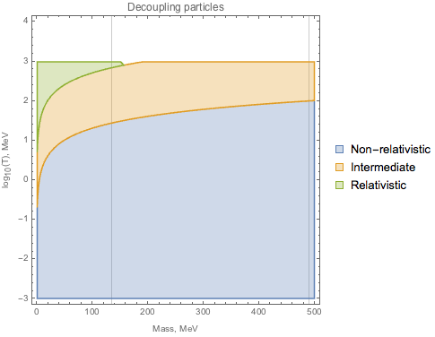
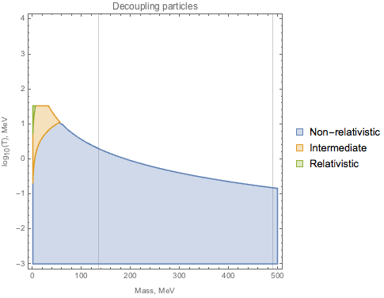

Sterile neutrinos generation and decoupling
Decoupling temperature and regime
Heavy sterile neutrinos ($N_{1,2}$) are produced thermally at the temperatures $\gtrsim 10^2 MeV$ (vaguely, depending on the mixing angle and the mass). Influence on the universe expansion at the later stages depends on the regime in which sterile neutrinos decouple from the plasma.
Decoupling happens when the interaction rate of the equilibrium-supporting reactions drops below the Hubble rate. In the radiation dominated epoch, Hubble rate can be conveniently approximated:
\begin{equation} H \approx \frac{T^2}{M_*} \end{equation}
Typical interaction rate for 2-to-2 scattering ($N + \nu \to N + \nu$) of the sterile neutrino with the coupling constant $g$ is of the form
\begin{equation} \Gamma_N = \left< \sigma n_\nu v\right> \end{equation}
where $\sigma$ is the cross-section of the reaction $\propto g^2$, and $v$ is the relative velocity.
Coupling constant for sterile neutrinos is $G_F |\theta|$, so cross-section from dimensional considerations looks like
\begin{equation} \sigma \sim [E]^{-2} = G_F^2 |\theta|^2 \cdot [E]^2 \end{equation}
Kinematically considered reaction contains few parameters: invariant mass and scattering angles The total cross-section does not depend on the angle, so $\sigma = \sigma(s)$.
\begin{equation} s \sim \begin{cases} m^2 & \text{for non-relativistic N} \\ T^2 & \text{for ultra-relativistic} \end{cases} \end{equation}
Then
\begin{equation} \Gamma_N \sim \begin{cases} G_F^2 |\theta|^2 T^3 m^2 \\ G_F^2 |\theta|^2 T^5 \end{cases} \end{equation}
$$ \Gamma_N \sim \frac{T^2}{M_*} $$
This gives us corresponding decoupling temperatures for sterile neutrinos:
\begin{equation} T^{-1} \sim \begin{cases} G_F^2 |\theta|^2 M_* m^2 \\ (G_F^2 |\theta|^2 M_*)^\frac13 \end{cases} \end{equation}
Hence, the distribution function of sterile neutrinos at the later times highly depends on the following factors:
- sterile-active mixing angle temperature dependence
- mass of the sterile neutrino
- regime of decoupling (relativistic/non-relativistic)
For example, if thermal corrections of $\theta$ are significant at the time of relativistic decoupling "in vacuum", sterile neutrinos might stay in the equilibrium longer and decouple being non-relativistic.
Using the analysis above, we assume no significant thermal corrections for the mixing angles and, for given mass and temperature, find the decoupling regime:
For $ \theta \approx 10^{-4} $  For $ \theta \approx 10^{-2} $ 
The plotted regions correspond to non-equilibrium species in different regimes. In practice, as the temperature drops, when particle with given mass enters any of the regions - it decouples in the corresponding regime. For the sakes of certainty, the "intermediate" regime corresponds to the particle specie with $\frac15 T < m < 5 T$.
Analysis of the decoupling regimes for the mass range of interest shows that for $\theta \lesssim 10^{-4}$ decoupling regime is rather relativistic, while for bigger values it is possible to get a fully-non-relativistic decoupling.
Decoupling and the QCD transition
Tuning of the parameters allows to shift the sterile neutrinos decoupling around the QCD transition temperature $~200 MeV$. The strong sector constituents of the plasma change enormously, requiring separate treatment of the quark-gluon and hadron phases and, possibly, the transition itself.